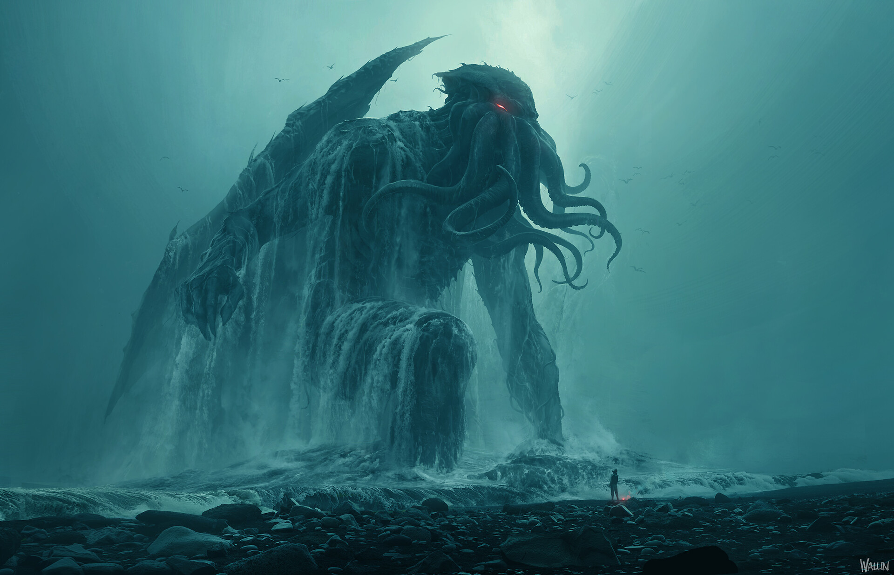

Entidade Cósmica
Cthulhu
Uma entidade colossal repousa nas profundezas da cidade submersa de R'lyeh, aguardando o momento em que as estrelas estarão novamente alinhadas. Seus sonhos alcançam mentes sensíveis através de oceanos e continentes, provocando pesadelos, cultos e visões de uma arquitetura impossível. Testemunhas descrevem asas, tentáculos e uma presença que desafia qualquer escala humana. Mesmo adormecido, Cthulhu influencia aqueles que o procuram, e sua eventual ascensão poderia transformar a civilização em um eco da antiga ordem cósmica.
NÍVEL DE AMEAÇA: EXTREMO